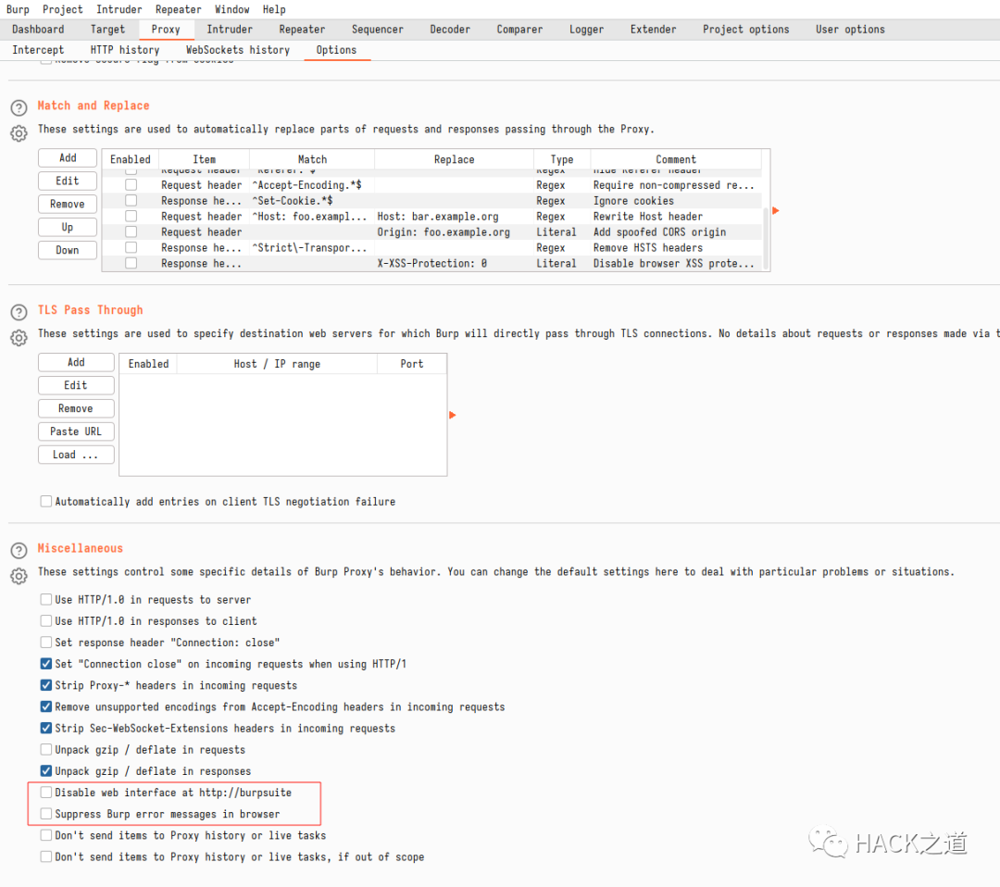

burp检测
目录
检测代理端口
前端请求本地8080端口查看是否存在
<h2 id='indicator'>Loading...</h2>
<script>
function burp_found() {
let e = document.getElementById('indicator');
e.innerText = 'Burp FOUND !!!';
}
function burp_not_found() {
let e = document.getElementById('indicator');
e.innerText = 'Burp not found.';
}
</script>
<img style="display: none;" src='http://burp/favicon.ico' onload='burp_found()' onerror='burp_not_found()'/>
启用这两个选项
